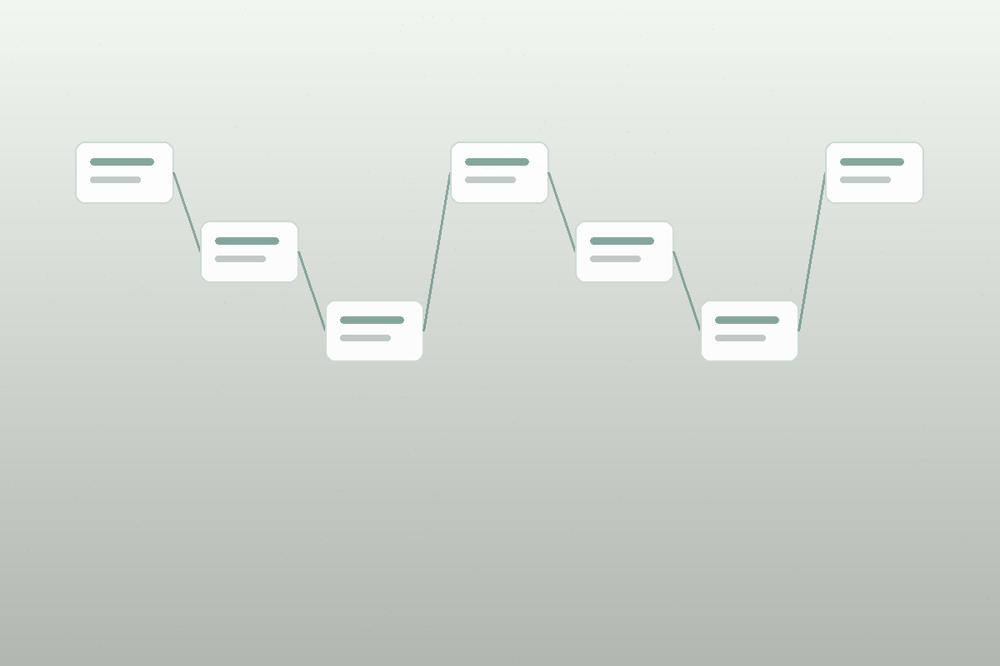

六个办公场景，共用一套底座
智能体不是孤立工具，而是共享知识、权限、审计和模型网关的业务入口。
从模板和依据生成可复核初稿
识别文种、主送对象和历史范例，输出结构化草稿、引用清单和格式提示。
回答绑定来源
召回政策片段，标注版本、条款和适用范围。
先过权限，再给结果
融合关键词、语义召回和密级过滤。

沉淀决议和责任
从记录中提取议题、责任单位、完成时限和待办事项。
发现变化、冲突和风险
对版本差异、政策引用、敏感表述和格式规范给出复核建议。
每一次生成，都走完整闭环
平台把 AI 能力限制在可解释、可追溯、可审批的办公流程里。
- 任务输入收集文种、材料、部门和输出要求。
- 权限识别按角色、部门、密级限定可用知识范围。
- 知识检索召回模板、政策、历史公文和会议材料。
- 智能体处理生成、抽取、比对或审校，保留来源证据。
- 人工确认关键输出经过复核后进入导出和留痕。
安全不是附加模块，是平台运行方式
适合在内网、专有云或本地环境部署，模型调用、知识检索和用户操作都进入统一审计链路。
文件、向量索引、审计记录和模型配置按本地安全域管理。
部门、岗位、角色、密级共同决定知识召回范围。
公文、政策解释、纪要和审校结论默认进入人工确认。
面向 OA、档案、督办、统一身份认证和业务系统保留集成点。
先从一个可验收的办公场景开始
建议从政策问答、文件检索和公文辅助生成切入，跑通知识入库、权限过滤、人工确认和审计留痕。